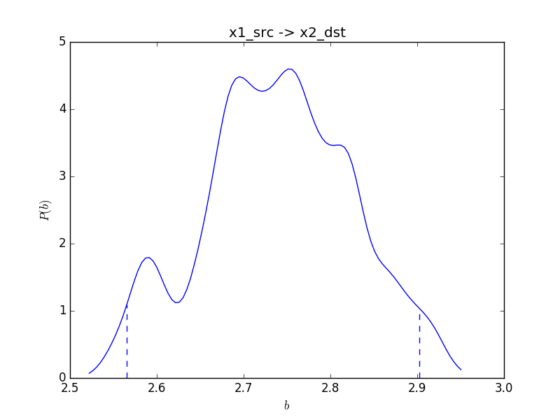

Tutorial¶
You can download history of the commands used in the following tutorial: commands.txt. In the tutorial, you will create an artificial data sampledata.csv. If you want to analyze your data, replace sampledata.csv by the file name of your data in the arguments of the commands.
Data format¶
BMLiNGAM accepts CSV files consisting of sample values, where each column corresponds to a variable. At least two columns should be contained in the given CSV file. If the file has three or more columns, BMLiNGAM analyzes all pairs in the file. The first row of the file is regarded as a header representing names of the variables.
For testing purposes, you can create a sample data file:
$ bmlingam-make-testdata
This command creates sampledata.csv in the current directory. The first few lines of the file are look like:
$ head -6 sampledata.csv
x1_src,x2_dst
4.90347111702,28.2435356416
4.64462948292,27.8093082005
-0.121317621386,10.0322904804
7.37865317396,34.1290637711
-1.65701750481,2.28515870729
‘x1_src’ and ‘x2_dst’ are the names of the two variables. Since this data is artificially created, the source (cause) and destination (effect) of the causal relationship is known. To check the estimation result, ‘(src)’ and ‘(dst)’ are included in the variable names.
When analyzing your own data, you should make your data as shown above.
Causal inference¶
To estimate causality for the data:
$ bmlingam-causality sampledata.csv --result_dir=result1
You will get a message as follows:
$ bmlingam-causality sampledata.csv --result_dir=result1
---- Algorithm parameters ----
Number of MC samples: 10000
Number of candidate models: 450
---- Data ----
Data loaded from sampledata.csv.
Data contains 100 samples.
Variable names: ['x1_src' 'x2_dst']
---- Inference for variables "x1_src" and "x2_dst" ----
Inferred : x1_src -> x2_dst (posterior prob: 0.274, loglikelihood: -278.632)
(best_rev): x2_dst -> x1_src (posterior prob: 0.183, loglikelihood: -279.036)
Hyper parameters of the optimal model:
Causality : var1 -> var2
Standardize : True
subtract_mu_reg: False
fix_mu_zero : True
prior_var_mu : auto
prior_indvdl : t
v_indvdl_1 : 0.600000
v_indvdl_2 : 0.400000
df_indvdl : 8.000000
L_cov12/21 : 0.900000
dist_noise : laplace
Hyper parameters of the reverse optimal model:
Causality : var2 -> var1
Standardize : True
subtract_mu_reg: False
fix_mu_zero : True
prior_var_mu : auto
prior_indvdl : t
v_indvdl_1 : 0.400000
v_indvdl_2 : 0.600000
df_indvdl : 8.000000
L_cov12/21 : 0.900000
dist_noise : laplace
Inferred causality table was saved as result1/causality.csv.
Optimal model was saved as result1/x1_src_x2_dst.bmlm.pklz.
Program finished at Sun Mar 6 02:12:22 2016
Elapsed time: 46.7 [sec]
This message means that the estimated causal direction is x1_src -> x2_dst with the posterior probability (\(P({\cal M}_{*}|{\cal D})\), see Posterior probability of models for its definition) 0.274. We will describe the interpretation of this probability later. You can also see the marginal log likelihood -278.632.
The message also includes the posterior probability of the optimal reverse model, which has the highest posterior probability in the models with the reverse causal direction to the optimal model \({\cal M}_{*}\). In the above example, the posterior probability the optimal reverse model is almost 0 (see causality.csv to know the accurate value, later).
After posterior probabilities, hyper parameters of these (global and reverse) optimal models are shown. Here is a table describing about hyper parameters:
prior_indvdl: Distribution of individual specific effects.'t'or'gauss'.v_indvdl_1/2: Scale of individual specific effects. These values are used in the code as:# in bmlingam_np.py v_indvdl_1 = (std_x[0] * hparams['v_indvdl_1'])**2 v_indvdl_2 = (std_x[1] * hparams['v_indvdl_2'])**2 mu1_ = np.sqrt(v_indvdl_1) * L_mu1 mu2_ = np.sqrt(v_indvdl_2) * L_mu2
mu1_andmu2_correspond to the means of \(\tilde{\mu}_{1}^{(i)}\) and \(\tilde{\mu}_{2}^{(i)}\), respectively, in the paper.L_cov12/21: \(\sigma_{12}\) in the paper.
If the given data file consists of three columns, all of combinations of the variables will be tested, thus the message will look like as below:
$ bmlingam-causality sampledata_threecolumns.csv --n_mc_samples=1000 --result_dir=result_threecol
---- Algorithm parameters ----
Number of MC samples: 1000
Number of candidate models: 450
---- Data ----
Data loaded from sampledata_threecolumns.csv.
Data contains 100 samples.
Variable names: ['v1' 'v2' 'v3']
---- Inference for variables "v1" and "v2" ----
Inferred : v2 -> v1 (posterior prob: 0.141, loglikelihood: -316.556)
(best_rev): v1 -> v2 (posterior prob: 0.001, loglikelihood: -321.832)
Hyper parameters of the optimal model:
Causality : var2 -> var1
Standardize : True
subtract_mu_reg: False
fix_mu_zero : True
prior_var_mu : auto
prior_indvdl : t
v_indvdl_1 : 0.600000
v_indvdl_2 : 0.600000
df_indvdl : 8.000000
L_cov12/21 : 0.700000
dist_noise : laplace
Hyper parameters of the reverse optimal model:
Causality : var1 -> var2
Standardize : True
subtract_mu_reg: False
fix_mu_zero : True
prior_var_mu : auto
prior_indvdl : t
v_indvdl_1 : 0.800000
v_indvdl_2 : 0.000000
df_indvdl : 8.000000
L_cov12/21 : -0.900000
dist_noise : laplace
---- Inference for variables "v1" and "v3" ----
Inferred : v3 -> v1 (posterior prob: 0.324, loglikelihood: -311.764)
(best_rev): v1 -> v3 (posterior prob: 0.000, loglikelihood: -318.510)
Hyper parameters of the optimal model:
Causality : var2 -> var1
Standardize : True
subtract_mu_reg: False
fix_mu_zero : True
prior_var_mu : auto
prior_indvdl : t
v_indvdl_1 : 0.600000
v_indvdl_2 : 0.600000
df_indvdl : 8.000000
L_cov12/21 : 0.900000
dist_noise : laplace
Hyper parameters of the reverse optimal model:
Causality : var1 -> var2
Standardize : True
subtract_mu_reg: False
fix_mu_zero : True
prior_var_mu : auto
prior_indvdl : t
v_indvdl_1 : 0.800000
v_indvdl_2 : 0.600000
df_indvdl : 8.000000
L_cov12/21 : 0.900000
dist_noise : laplace
---- Inference for variables "v2" and "v3" ----
Inferred : v2 -> v3 (posterior prob: 0.160, loglikelihood: -309.562)
(best_rev): v3 -> v2 (posterior prob: 0.001, loglikelihood: -314.317)
Hyper parameters of the optimal model:
Causality : var1 -> var2
Standardize : True
subtract_mu_reg: False
fix_mu_zero : True
prior_var_mu : auto
prior_indvdl : t
v_indvdl_1 : 0.400000
v_indvdl_2 : 0.400000
df_indvdl : 8.000000
L_cov12/21 : 0.900000
dist_noise : laplace
Hyper parameters of the reverse optimal model:
Causality : var2 -> var1
Standardize : True
subtract_mu_reg: False
fix_mu_zero : True
prior_var_mu : auto
prior_indvdl : t
v_indvdl_1 : 0.400000
v_indvdl_2 : 0.600000
df_indvdl : 8.000000
L_cov12/21 : 0.900000
dist_noise : laplace
Inferred causality table was saved as result_threecol/causality.csv.
Optimal model was saved as result_threecol/v1_v2.bmlm.pklz.
Optimal model was saved as result_threecol/v1_v3.bmlm.pklz.
Optimal model was saved as result_threecol/v2_v3.bmlm.pklz.
Program finished at Sun Mar 6 02:13:18 2016
Elapsed time: 8.2 [sec]
Command bmlingam-causality creates two types of files. One is causality.csv, consisting of the estimated causality (direction) for every pairs of the variables. Another is referred to as model selection file with extension ‘.bmlm.pklz’. A model selection file contains the result of Bayesian model selection, which was applied for causal inference. This file will be used later in estimation of the posterior distribution of the regression coefficient, which is relating the two variables.
Model selection files will be created for every pairs of the all variables in the data. In the above first example, single file x1_src_x2_dst.bmlm.pklz will be created, because sampledata.csv has only two variables (two columns). The filename of each model selection file includes the names of the variables in each pair.
Command line options of bmlingam-causality are as follows:
$ bmlingam-causality --help
usage: bmlingam-causality [-h] [--result_dir RESULT_DIR] [--out_optmodelfile]
[--no_out_optmodelfile] [--col_names COL_NAMES]
[--seed SEED] [--standardize_on] [--standardize_off]
[--fix_mu_zero_on] [--fix_mu_zero_off]
[--max_c MAX_C] [--n_mc_samples N_MC_SAMPLES]
[--dist_noise DIST_NOISE] [--df_indvdl DF_INDVDL]
[--prior_scale PRIOR_SCALE]
[--prior_indvdls PRIOR_INDVDLS] [--cs CS]
[--L_cov_21s L_COV_21S]
[--betas_indvdl BETAS_INDVDL]
[--betas_noise BETAS_NOISE]
[--causalities CAUSALITIES]
[--sampling_mode SAMPLING_MODE]
csv_file
positional arguments:
csv_file CSV file of data.
optional arguments:
-h, --help show this help message and exit
--result_dir RESULT_DIR
Directory where result files are saved. Default is
current directory.
--out_optmodelfile If this option is choosen (default), optimal model
files will be created.
--no_out_optmodelfile
If this option is choosen, optimal model files will
not be created.
--col_names COL_NAMES
Names of column, specified as 'name1,name2,...' (space
not allowed). If set this value 'auto', column names
will be automatically determined as 'x0,x1,...'. If
csv file have column names (the 1st row of the file),
they will be overwritten.
--seed SEED Specify the seed of random number generator used in MC
sampling. Default is 0.
--standardize_on If this option is choosen (default), data is
standardized to mean 0 and variance 1 before causal
inference.
--standardize_off If this option is choosen, data is not standardized.
--fix_mu_zero_on If this option is choosen (default), common
interception parameter mu_1,2 will be treated as 0
(constant), not estimated.
--fix_mu_zero_off If this option is choosen, common interception
parameter mu_1,2 will be included in models as
stochastic variables.
--max_c MAX_C Scale constant on tau_cmmn. Default is 1.0.
--n_mc_samples N_MC_SAMPLES
The number of Monte Carlo sampling in calculation of
marginal likelihood values of models. Default is
10000.
--dist_noise DIST_NOISE
Noise distribution. 'laplace' or 'gg' (Generalized
Gaussian). Default is laplace.
--df_indvdl DF_INDVDL
Degrees of freedom of T distribution for the prior of
individual specific effects. Default is 8.0.
--prior_scale PRIOR_SCALE
Prior distribution on noise variance. 'log_normal' or
'tr_normal' (truncated normal distribution). Default
is log_normal.
--prior_indvdls PRIOR_INDVDLS
Distribution of individual effects in the model. This
argument can be 't', 'gauss' or 'gg'. If you want to
include multiple distributions, set this argument as
't,gauss', then the program will apply both of t and
Gaussian distributions to candidate models. Default is
t.
--cs CS Scales of stds of the individual specific effects.
Default is '0,.2,.4,.6,.8'.
--L_cov_21s L_COV_21S
List of correlations of individual specific effects.
Default is '-0.9,-0.7,-0.5,-0.3,0,.3,.5,.7,.9'.
--betas_indvdl BETAS_INDVDL
Shape parameter values of generalized Gaussian
distributions for individual specific effects. When
prior_indvdls includes 'gg', all of the beta values
will be tested. .5 and 1. correspond to Laplace and
Gaussian distributions, respectively. Default is
'.25,.5,.75,1.'.
--betas_noise BETAS_NOISE
Shape parameter values of generalized Gaussian
distributions for observation noise. When dist_noise
includes 'gg', all of the beta values will be tested.
.5 and 1. correspond to Laplace and Gaussian
distributions, respectively. Default is
'.25,.5,.75,1.'.
--causalities CAUSALITIES
Causalities to be tested. If set to 'x1->x2' or
'x2->x1', causality is not inferred and other
hyperparameters are searched. Default is 'x1->x2,
x2->x1'.
--sampling_mode SAMPLING_MODE
Specify sampling mode for numerical integration via
MC. Options are 'normal', 'cache', 'cache_mp2',
'cache_mp4' or 'cache_mp8'. 'normal' means naive MC
sampling: generate random values at each
hyperparameter set. When specified 'chache', random
values are generated only at the beginning of the
program and applied to marginal likelihood calculation
with difference hyperparameter sets. Multiprocessing
is supported with the option 'cache_mp[2, 4, 8]',
using 2, 4 or 8 cores.
For example, if you want to estimate causality for models Gaussian individual effects:
bmlingam-causality --prior_indvdls=gauss sampledata.csv
Many of command line parameters are related to model selection procedure. See Model in detail.
Bayesian model selection for causal inference¶
BMLiNGAM estimates causality with Bayesian model selection (Shimizu and Bollen, 2014). Each Bayesian hierarchical model in candidates (denoted by \(\{{\cal M}_{r}\}_{r=1}^{R}\)) for the model selection represents causality between two variables and its direction: \(x_{1}\rightarrow x_{2}\) or \(x_{2}\rightarrow x_{1}\). The candidate models also differ in their hyperparameters, which specifies properties other than the causality: covariance of noise, confounders, and so on.
The causality is inferred with the MAP model, i.e., \(r^{*}\equiv{\rm arg}\max_{r}P({\cal M}_{r}|{\cal D})\propto P({\cal M}_{r}, {\cal D})\), where \({\cal D}\) denotes the data. If \({\cal M}_{r^{*}}\) represents the causality \(x_{1}\rightarrow x_{2}\), it is the inference result of BMLiNGAM.
The posterior probability of a model given the data is calculated by normalizing the full probability:
where \(P({\cal D})=\sum_{r}P({\cal D}, {\cal M}_{r})\). Since we assume a uniform distribution on \(P({\cal M}_{r})\), the chance level of the probability with random selection of a model is the reciprocal of the number of the candidate models. In the above example, it is 1/450 \(\sim\) 0.002, which is much smaller than the estimated posterior probability 0.274.
Posterior distribution of regression coefficient¶
The posterior distribution of the regression coefficient can be estimated for the selected model:
bmlingam-coeff x1_src_x2_dst.bmlm.pklz
A kernel density estimator is applied to the samples from the posterior distribution obtained with MCMC (Metropolis-Hastings algorithm). You will get messages as follows:
$ bmlingam-coeff result1/x1_src_x2_dst.bmlm.pklz
---- Variables x1_src and x2_dst ----
Inferred causality : x1_src -> x2_dst
Posterior mean : 2.739616
95% Credible interval: (2.565356, 2.902799)
A figure of the distribution of the posterior sampleswas saved as result1/x1_src_x2_dst.bmlm.png.
Posterior samples was saved as result1/x1_src_x2_dst.bmlm.post.csv.
Program finished at Sun Mar 6 02:12:57 2016
Elapsed time: 31.5 [sec]
Following indicators shoing the progress of MCMC (including burn-in period), you can see the mean value and 95% credible interval of the MCMC posterior distribution of the regression coefficient.
This command will also show a figure of the estimated posterior distribution like this:
{kind=link}
Dotted lines indicate 95% credible interval. The MCMC samples is saved in a CSV file with suffix .bmlm.post.csv.
Command line options of bmlingam-coeff are as follows:
$ bmlingam-coeff --help
usage: bmlingam-coeff [-h] [--plot_figure] [--no_plot_figure] [--save_figure]
[--no_save_figure] [--save_posterior]
[--no_save_posterior] [--figtype {pdf,png}]
[--n_mcmc_samples N_MCMC_SAMPLES] [--n_burn N_BURN]
[--seed SEED] [--seed_burn SEED_BURN]
optmodel_file
positional arguments:
optmodel_file Optimal model file.
optional arguments:
-h, --help show this help message and exit
--plot_figure If this option is choosen, a plot of the posterior
samples will be plotted.
--no_plot_figure If this option is choosen (default), a plot of the
posterior samples will not be plotted.
--save_figure If this option is choosen (default), a plot of the
posterior samples will be saved into a file.
--no_save_figure If this option is choosen, a plot of the posterior
samples will not be saved.
--save_posterior If this option is choosen (default), the posterior
samples will be saved into a file.
--no_save_posterior If this option is choosen, the posterior samples will
not be saved.
--figtype {pdf,png} Figure file type (pdf or png). Default is png.
--n_mcmc_samples N_MCMC_SAMPLES
The number of MCMC samples (after burn-in). Default is
10000.
--n_burn N_BURN The number of burn-in samples in MCMC. Default is
10000.
--seed SEED Specify the seed of random number generator used in
posterior sampling by MCMC. Default is 2.
--seed_burn SEED_BURN
Specify the seed of random number generator used in
the burn-in period of posterior sampling. Default is
1.
If you want a png image:
bmlingam-coeff --figtype='png' x1_src_x2_dst.bmlm.pklz